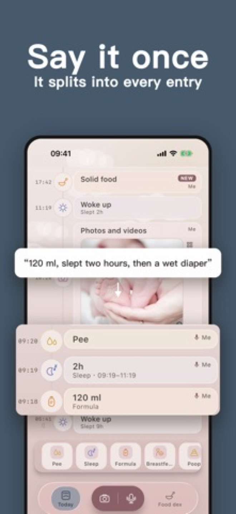
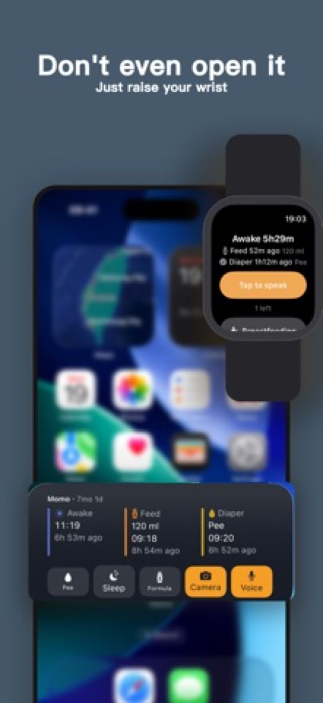
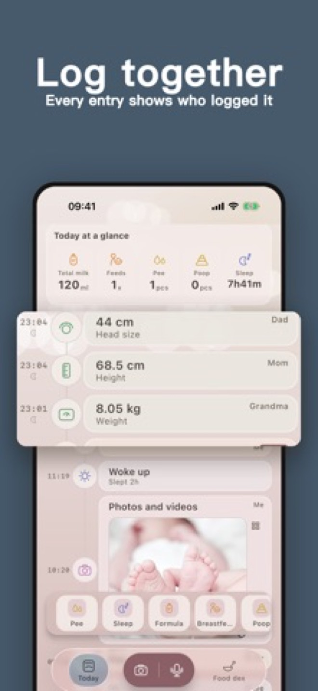
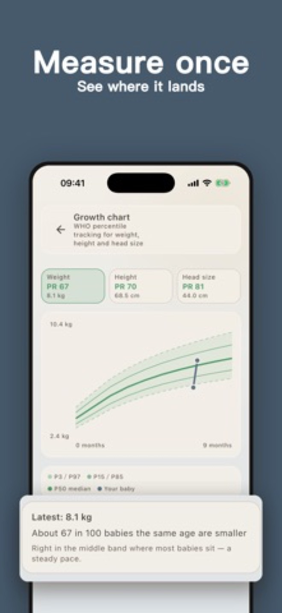
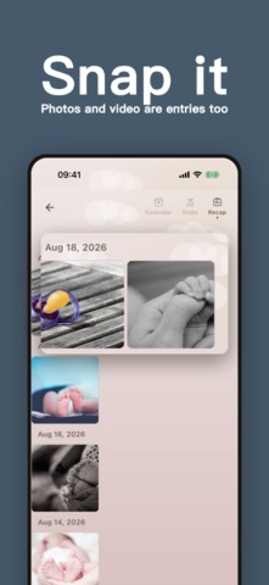
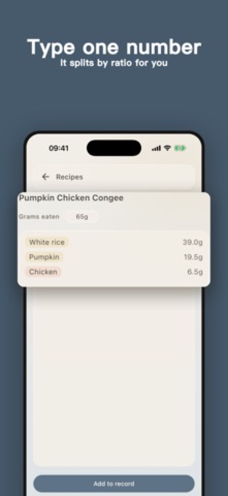
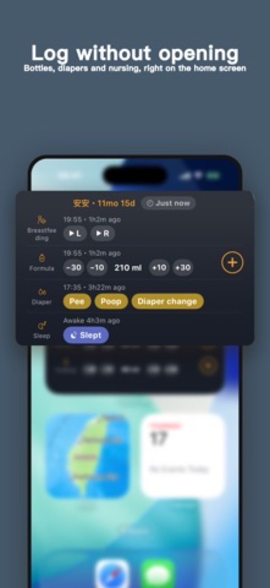

Deerly – Baby Tracker & Log
One shared baby log that the whole family can update with a tap, by voice or from a widget, and see within seconds.
- Log with one hand or by voice: one sentence such as '120 ml and a dirty diaper' becomes separate records.
- Everyone who cares for the baby logs the same record, sees new entries within seconds and knows who logged each one, free.
- Daycare reports and history from another app land in the same log, next to WHO growth charts and daily stats.
View on the App Store Get it on Google Play
How to use DeerlyWhy Deerly exists







Deerly is a baby log for parents of babies aged 0-2. Log feeds, sleep, diapers and health with one tap, or just say it out loud, so every caregiver knows what happened last without asking.
Partners and grandparents log the same baby and see new entries within seconds, with each entry showing who logged it. No more texting each other to ask when the last bottle was.
Deerly also reads daycare daily reports and imports a full Piyolog export, so records that used to live on paper or in another app end up in one place.
Who it's for
- Parents caring for a baby aged 0-2, with a partner or grandparents logging the same baby
- Night feeds while holding the baby in one arm, when typing is hard
- Handing the baby over to someone who needs to know when the last feed or diaper was
- Picking the baby up from daycare with a paper or PDF daily report
- Parents tracking a preterm baby's corrected age, and Piyolog users bringing their history along
What you can do
- One-tap logging, 30+ record types — Feeds (nursing timer, bottle, formula, pumped milk), diapers, sleep, solids, temperature, medicine, vaccines, height, weight and more in one app.
- Family logging with real-time sync — Partner and grandparents log the same baby; everyone sees new entries within seconds and each entry shows who logged it. Free.
- Voice logging — Say one sentence such as "120 ml and a dirty diaper" and it becomes separate records, no keyboard needed.
- Home Screen and Lock Screen widgets — Log bottle amounts, diapers, nursing and sleep/wake from the Home Screen widget without opening the app, back-date by 15 minutes up to 2 hours, and see time since the last feed on the Lock Screen.
- Apple Watch nursing timer — Start, switch sides and pause a breastfeeding timer from your wrist.
Free and paid
Deerly is free to download. Tracking, all record types, stats, growth charts, family record sharing and recap sharing are always free; the free plan shows ads and includes limited voice logging. Deerly Pro is a subscription that lets the family see shared photos and videos, raises the voice logging quota, removes the watermark from recap exports, removes ads, continues daycare report and Piyolog import and unlocks a custom baby character; one subscriber covers the family group. Pro is US$3.99 per month or US$29.99 per year, and the yearly plan includes a 2-month free trial. If you only need one thing, Family Sharing, No Ads and Voice Pack (extra voice logging) are each available as a US$0.99 monthly subscription. Subscriptions renew automatically and can be cancelled anytime in your App Store account settings.
Privacy
An account (Sign in with Apple or Sign in with Google) is needed to back up records and share them with family. Records sync through Deerly's own server. Photos and videos are relayed briefly between family devices and then deleted from the server; the kept copies are on family phones. The free plan shows ads through AdMob, which is declared on the App Store privacy label, and you see Apple's tracking permission prompt before a rewarded ad.
FAQ
Developer
This site is run by Kennily (Ken), the developer of this app. apps.kennily.app